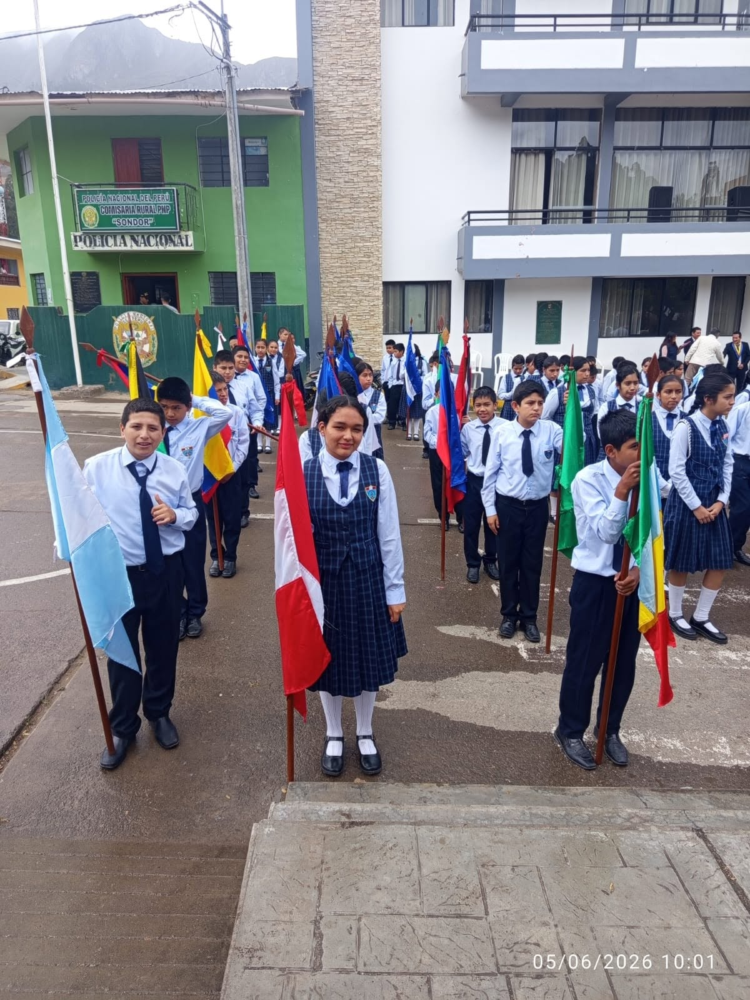
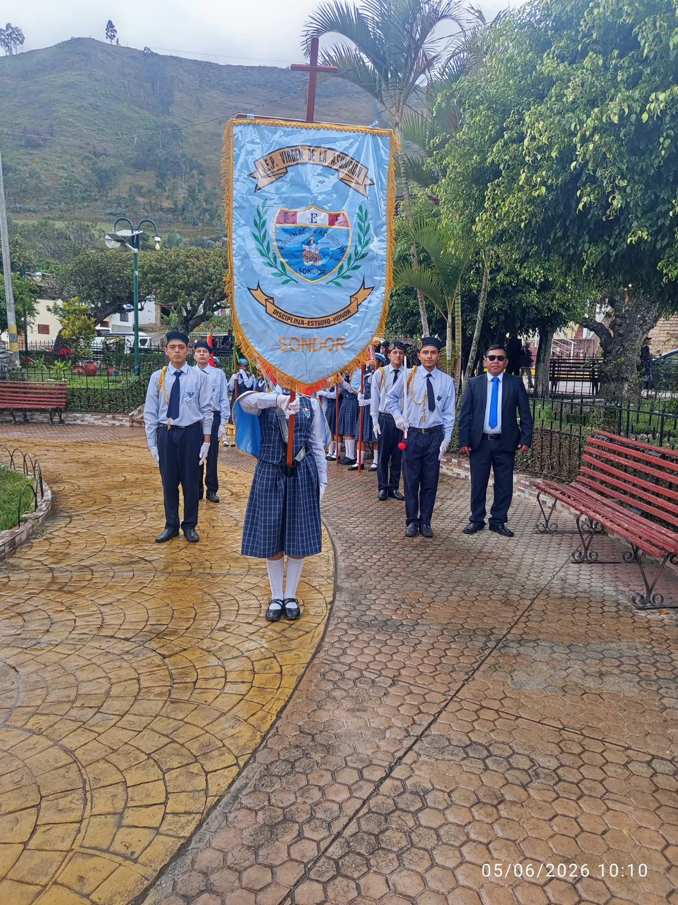
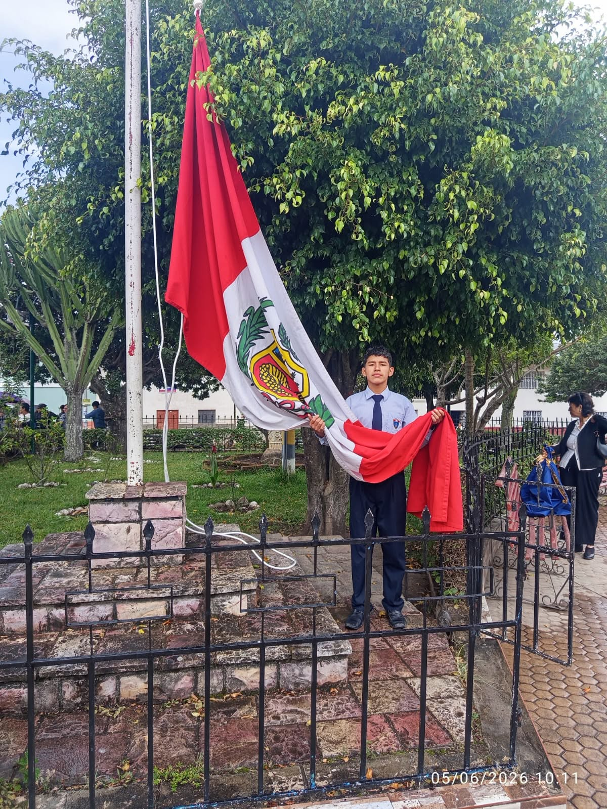
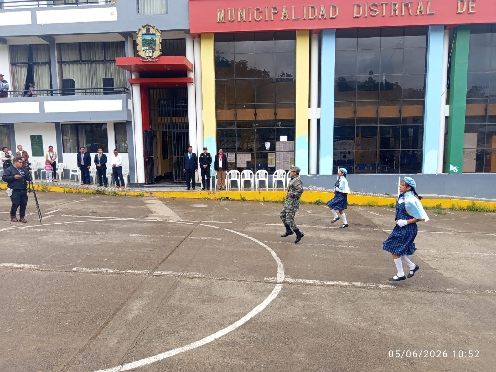
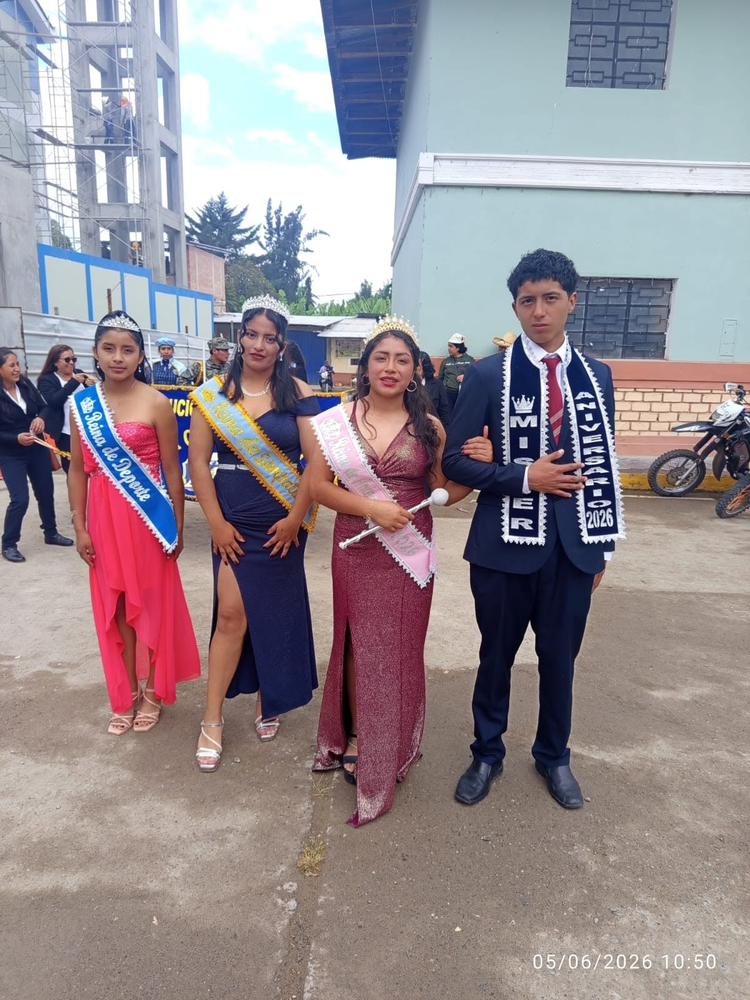
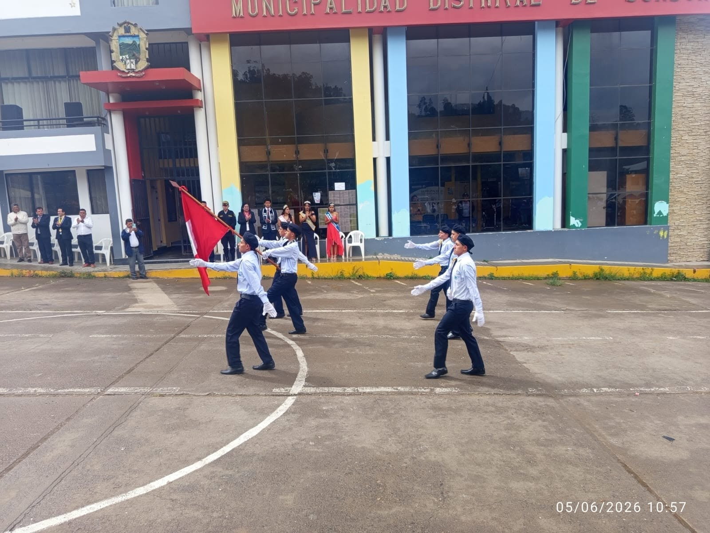

I.E. “Virgen de la Asunción”
El desfile escolar por aniversario es uno de los actos cívicos más emblemáticos dentro de la institución educativa. Representa la unión, disciplina y orgullo de pertenecer a una comunidad que forma estudiantes con valores y compromiso.
Más allá del orden y la coordinación, este evento simboliza la identidad institucional y el respeto por la historia del colegio.
Las semanas previas al desfile son de intensa preparación. Los estudiantes ensayan el paso marcial, la alineación y la coordinación de los batallones. La banda de música perfecciona las marchas mientras los docentes organizan la logística general del evento.
El día del desfile, las calles se llenan de emoción y patriotismo institucional. Los estudiantes marchan con uniforme impecable, mientras padres y autoridades observan con orgullo.
El desfile no solo celebra el aniversario del colegio, sino que reafirma el compromiso de los estudiantes con su formación académica y valores ciudadanos.





